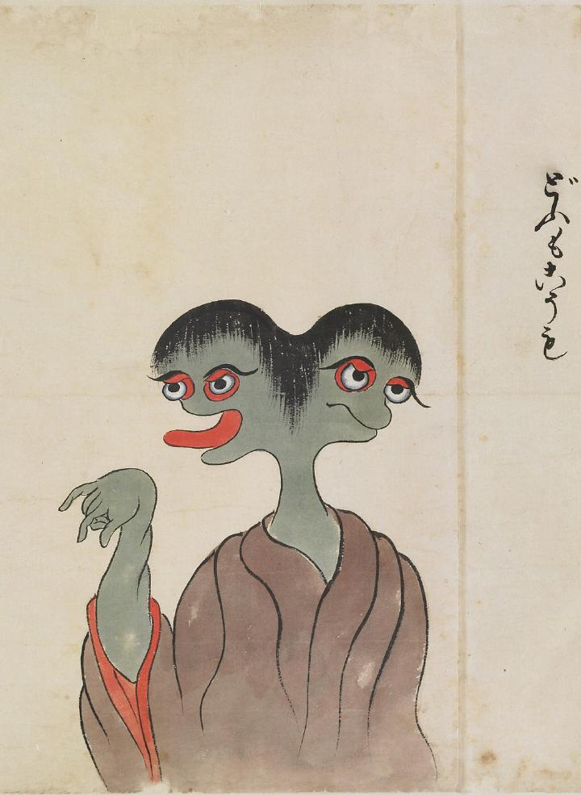

どうもこうも；ドウモコウモ

頭が2つある化物。肌は灰緑色で淡い赤紫色の衣をまとっている。右の頭は口を開けて舌を出している。右腕を上げて、手を前に垂らしている。
著作者：北斎季親／出典：親書誌：U426_nichibunken_0052：化物尽絵巻；バケモノヅクシエマキ／日付：2007／資源識別子：U426_nichibunken_0052_0003_0000
Copyright (c)2010- International Research Center for Japanese Studies, Kyoto, Japan. All rights reserved.